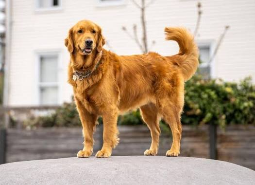
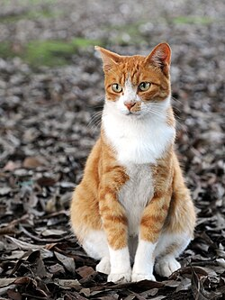

Dogs are playful. They love physical activity such as going for walks, fetching sticks, leaping into ponds, and racing wildly to and fro. Dogs will join you for a jog or for a day in the park or even for an exuberant game of frisbee. Yet dogs can also be soft and cuddly and ready at any time for a loving pat and a reassuring hug. They're affectionate and they're soothing to stroke, plus most dogs can also remain calm when necessary and be tolerant of small children who don't yet know how to be quiet or to behave gently around animals.

The cat is a beautiful small animal resembling the likes of a tiger. It lives on the streets as well as in our houses and is one of our favourite pet animals. The cat’s body is covered with soft, silky hair and has four short legs and sharp claws hidden in the fleshy pads.
©Copyright 2020
© 2026 Asher | Main Homepage